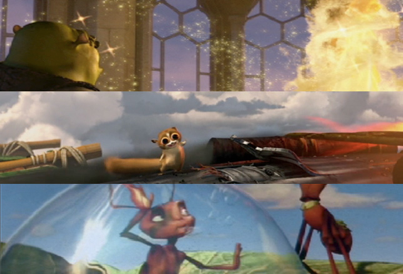
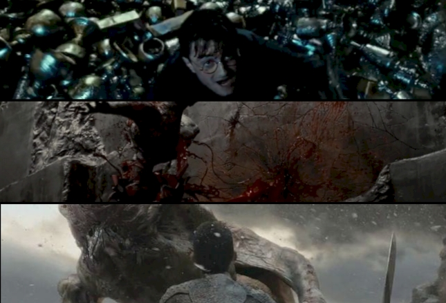

scott.m.singer.cg@gmail.com
Designed and implemented many data asset and process execution pipelines and frameworks including, large data set manipulation and transfer, as well as asset management and process event scheduling
Designed a data driven FX process and control architecture to encapsulate and automate tasks within a primarily manual VFX pipeline
Supervised the rearchitecting of the post-layout pipeline for greater asset flexibility in a rigid Feature Animation pipline
CoAuthored the first large scale Character Effects pipeline to bring a higher level of modularity and automation
Designed the first large scale clothing animation pipeline for a feature animation
Integrated external, 3rd party tools into the animation and effects workflows of an entirely proprietary production pipeline

Experience in all aspects of the feature animation pipeline in my roles as VFX Supervisor, Head of Effects and FX Animator
Creative and technical supervision of teams including those in remote locations
Developed the curriculum for a wildly successfull effects animator/developer training program The FX Challenge, in operation for 8 years
Supervizing efforts across departments, teams and sites
Designed departmental restructuring to achieve organizational parity across departments
Designed, implemented and execute many visual and technical systems including, destruction, clothing, fire, dust, explosions

Digital Effects Supervisor and artitst working on a variety of shots including fur, fluids, debris, particles and feathers. Architected a data driven effects pipeline based on parametric design principles
Supervised teams of artists and developers to achieve numerous effects and cfx shots inluding fur, debris, smoke, crowds, particles, fluids.
Helped design and further studio efforts to automate and streamline VFX pipeline tasks.
Architected a pilot framework for studio asset management and process control.